◆「迦勒底男性精選2020 Pick Up召喚(每日交替)」期間◆
期間:2020年3月6日(五) 17:00～3月20日(五) 11:59
舉辦期間限定「迦勒底男性精選2020 Pick Up召喚(每日交替)」！
期間限定活動「艾尤的春風 ～魔女與愉快夥伴與嶄新冒險～」中活躍的「★5(SSR)奧德修斯」新登場！
另外，本次由於是“男性精選”，只限包含透過章節進行追加從者的男性從者為召喚對象。
「迦勒底男性精選2020 Pick Up召喚(每日交替)」中，對象★5(SSR)男性從者以每日交替Pick Up，「★5(SSR)奧德修斯」「★4(SR)喀耳刻(俄刻阿諾斯的Caster)」常駐Pick Up！
「★5(SSR)王權微行」「★5(SSR)ブルー・イリュージョン」「★4(SR)エクスクルーシブ・テイラー」「★4(SR)探偵ヱドモン～新章突入編～」「★4(SR)俺様生徒会」「★3(R)乱世上々」「★3(R)ゴッズ・ディール」「★3(R)ダディ・レターライブ」「★3(R)ブザー・ビーター」做為期間限定概念禮裝登場！
裝備上述9種概念禮裝的話，在期間限定活動「艾尤的春風 ～魔女與愉快夥伴與嶄新冒險～」中會提升活動收集道具的掉落獲得數。
Pick Up期間中，Pick Up對象從者與概念禮裝的出現機率提升！
詳情請在聖晶石召喚畫面左下的召喚詳細確認。
11次召喚中確定1張★4(SR)以上和確定1位★3(R)以上的從者！ ※確定★4(SR)以上包含從者和概念禮裝。 ※本頁面皆為開發中圖片。會有與實際圖片相異的情況。
◆有關從者的注意◆
※性別「男性」的從者之外，下述的從者也包含在會被抽出對象。
・★5(SSR)俄里翁
・★5(SSR)恩奇杜
・★4(SR)夏爾・德翁
・★4(SR)阿斯托爾福(Rider)
・★4(SR)喀耳刻(俄刻阿諾斯的Caster)
※透過章節進行追加的男性從者，就算章節通過前也能入手。
※下述的從者在Pick Up期間結束後仍會在故事召喚被抽出。
・每日交替Pick Up對象★5(SSR)男性從者
・★5(SSR)恩奇杜
・★4(SR)喀耳刻(俄刻阿諾斯的Caster)
※下述的從者自Pick Up期間結束後的2020年3月20日(五) 12:00，追加到故事召喚。
・★5(SSR)奧德修斯
※關於隱藏真名尚未判明的從者，透過主線關卡的進行會讓從者及一部份寶具的名稱變化。
◆有關從者真名的注意◆
在2018年12月31日(二) 23:00以後新配信的主線故事及期間限定活動、一部份關卡、宣傳活動及召喚中，會顯示隱藏真名的對象從者真名。
※2018年12月31日(一) 22:59前已經配信的主線故事、復刻活動、一部份關卡中不在此限。
◆有關概念禮裝的注意◆
※「★3(R)乱世上々」「★3(R)ゴッズ・ディール」「★3(R)ダディ・レターライブ」「★3(R)ブザー・ビーター」在Pick Up期間中，也能靠友情點數召喚獲得。
※請注意自友情點數召喚抽出的「★3(R)乱世上々」「★3(R)ゴッズ・ディール」「★3(R)ダディ・レターライブ」「★3(R)ブザー・ビーター」在自動變還設定登錄★3(R)概念禮裝的情況，會變成自動變還的對象。
◆「迦勒底男性精選2020 Pick Up召喚(每日交替)」Pick Up內容◆
| Pick Up期間 | Pick Up內容 | |
|---|---|---|
| 全天Pick Up | 每日交替Pick Up | |
| 3/6(五) 17:00～ 3/7(六) 22:59 |
★5 奧德修斯 ★4 喀耳刻(俄刻阿諾斯的Caster) |
- |
| 3/7(六) 23:00～3/8(日) 22:59 | ★5 阿周那 | |
| 3/8(日) 23:00～3/9(一) 22:59 | ★5 庫・夫林〔Alter〕 | |
| 3/9(一) 23:00～3/10(二) 22:59 | ★5 阿基里斯 | |
| 3/10(二) 23:00～3/11(三) 22:59 | ★5 迦爾納 | |
| 3/11(三) 23:00～3/12(四) 22:59 | ★5 拿破崙 | |
| 3/12(四) 23:00～3/13(五) 22:59 | ★5 弗拉德三世(Berserker) | |
| 3/13(五) 23:00～3/14(六) 22:59 | ★5 諸葛孔明〔艾梅洛Ⅱ世〕 | |
| 3/14(六) 23:00～3/15(日) 22:59 | ★5 李書文(Assassin) | |
| 3/15(日) 23:00～3/16(一) 22:59 | ★5 奧茲曼迪亞斯 | |
| 3/16(一) 23:00～3/17(二) 22:59 | ★5 恩奇杜 | |
| 3/17(二) 23:00～3/18(三) 22:59 | ★5 尼古拉・特斯拉 | |
| 3/18(三) 23:00～3/19(四) 22:59 | ★5 項羽 | |
| 3/19(四) 23:00～3/20(五) 11:59 | - | |
※請注意會以每日交替變更Pick Up的從者。

| 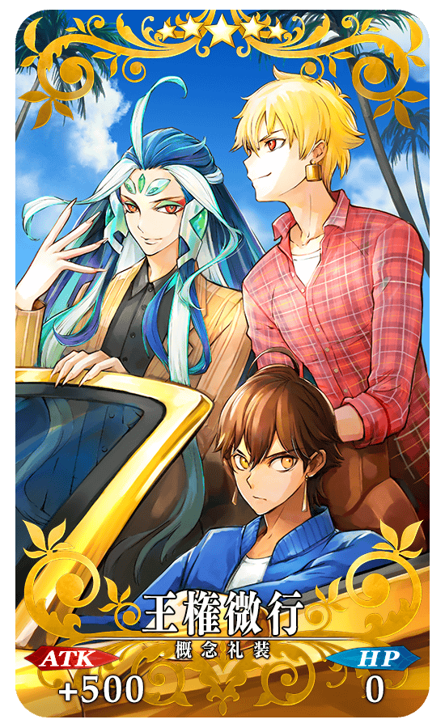 |
★★★★★SSR |
| 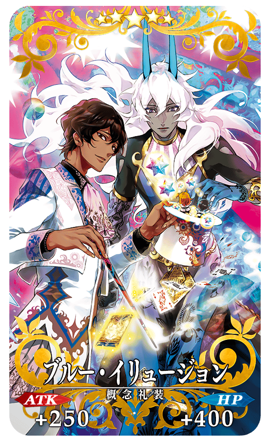 |
★★★★★SSR |
| 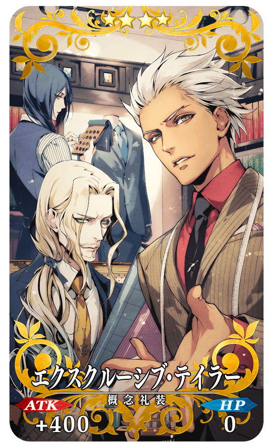 |
★★★★SR |

|
★★★★SR |
|
★★★★SR |
| 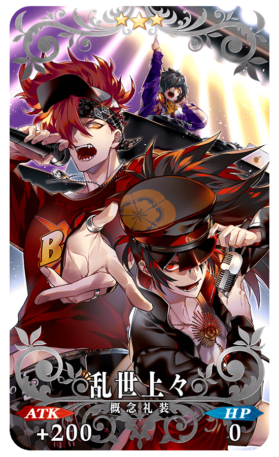 |
★★★R |
| 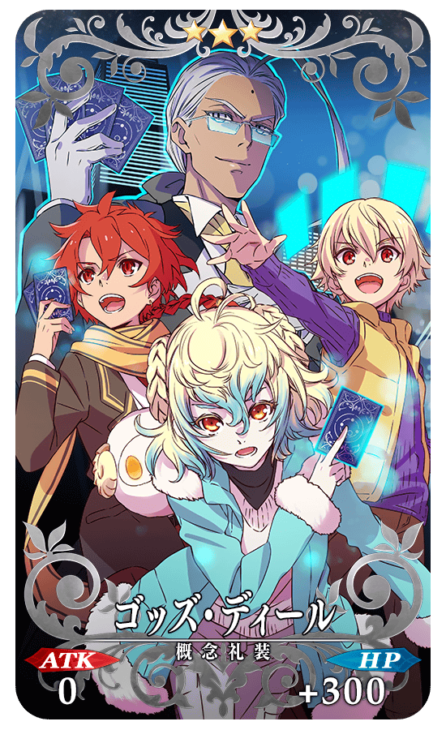 |
★★★R |

|
★★★R |
| 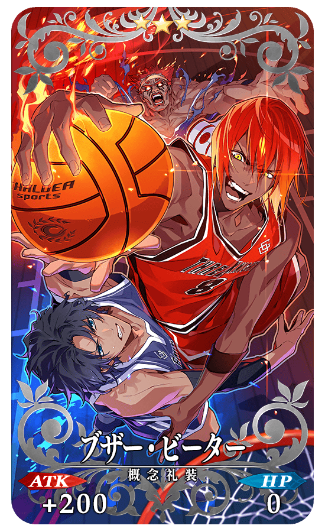 |
★★★R |

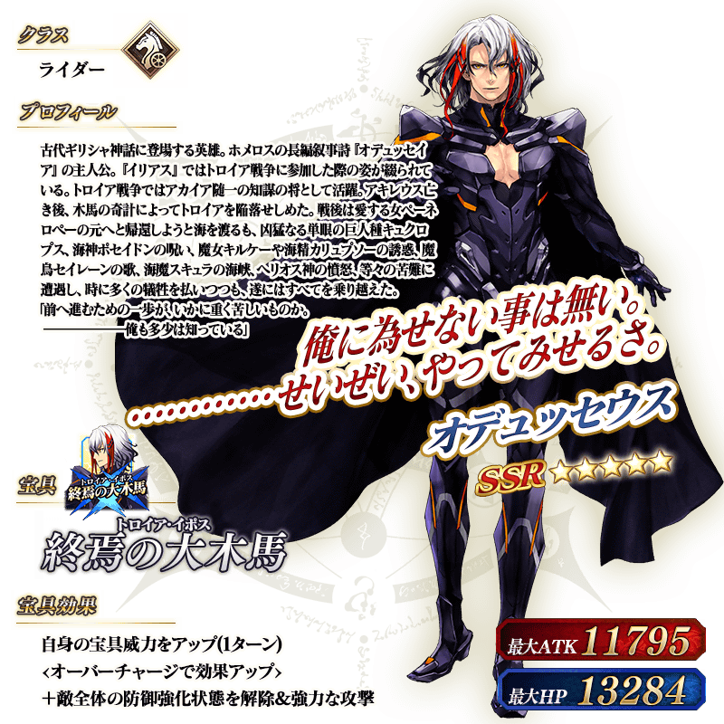 ※上述「★5(SSR)奧德修斯」的立繪為靈基再臨第2階段。
介紹「★5(SSR)奧德修斯」的寶具演出！
在「Fate/Grand Order」官方網站內的公告中，以影片公開寶具演出，敬請確認。
 ※上述「★5(SSR)阿周那」的立繪為靈基再臨第2階段。
※上述「★5(SSR)阿周那」的立繪為靈基再臨第2階段。
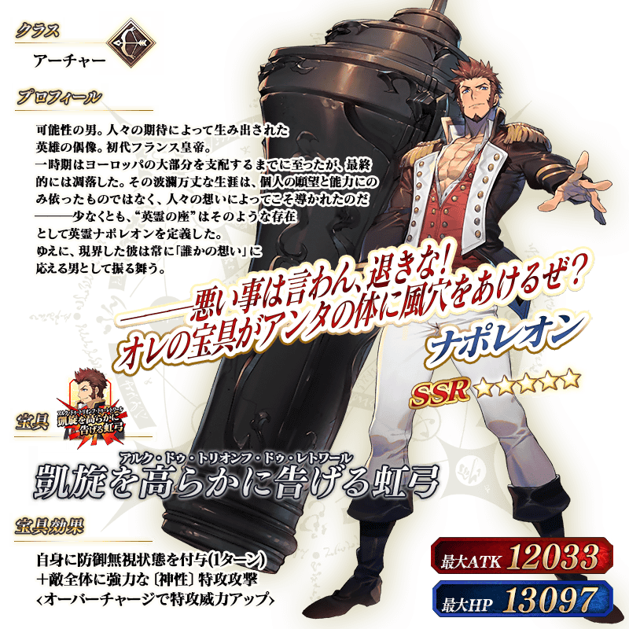
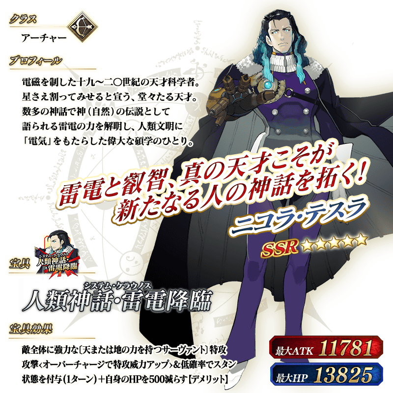 ※上述「★5(SSR)尼古拉・特斯拉」的立繪為靈基再臨第2階段。
 ※上述「★5(SSR)恩奇杜」的立繪為靈基再臨第2階段。
※上述「★5(SSR)恩奇杜」的立繪為靈基再臨第2階段。
 ※上述「★5(SSR)迦爾納」的立繪為靈基再臨第2階段。
※上述「★5(SSR)迦爾納」的立繪為靈基再臨第2階段。
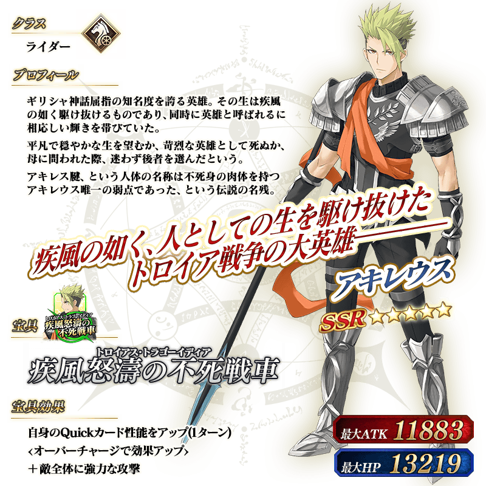 ※上述「★5(SSR)阿基里斯」的立繪為靈基再臨第2階段。
 ※上述「★5(SSR)奧茲曼迪亞斯」的立繪為靈基再臨第2階段。
※上述「★5(SSR)奧茲曼迪亞斯」的立繪為靈基再臨第2階段。
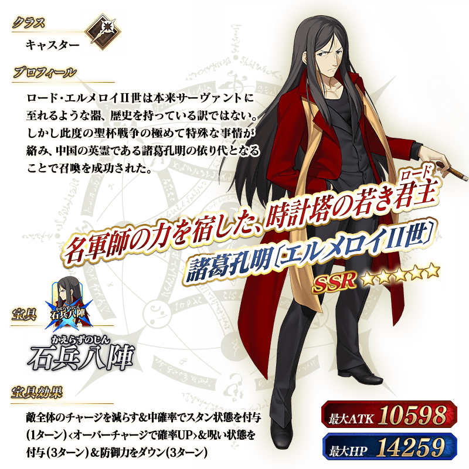
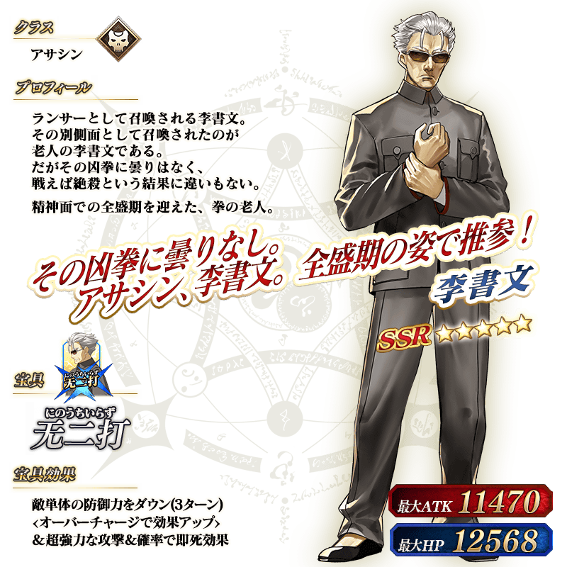 ※上述「★5(SSR)李書文(Assassin)」的立繪為靈基再臨第2階段。
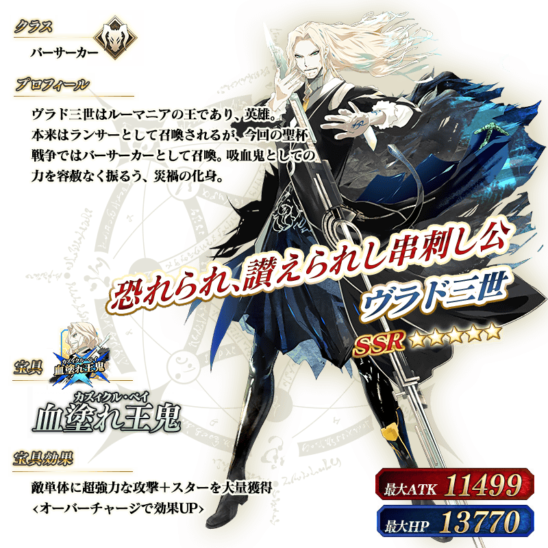 ※上述「★5(SSR)弗拉德三世(Berserker)」的立繪為靈基再臨第2階段。
 ※上述「★5(SSR)庫・夫林〔Alter〕」的立繪為靈基再臨第2階段。
※上述「★5(SSR)庫・夫林〔Alter〕」的立繪為靈基再臨第2階段。
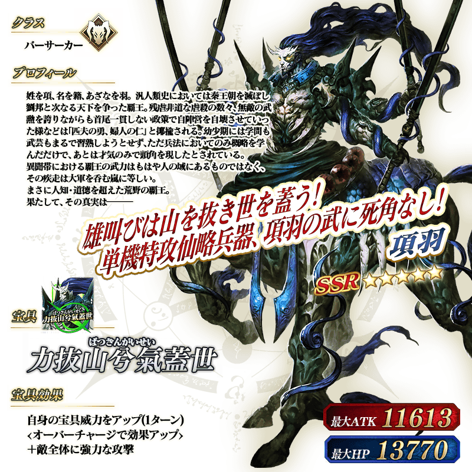 ※上述「★5(SSR)項羽」的立繪為靈基再臨第2階段。
介紹12位Pick Up從者的寶具演出！
在「Fate/Grand Order」官方網站內的公告中，以影片公開寶具演出，敬請確認。
【★5(SSR)阿周那】
【★5(SSR)拿破崙】
【★5(SSR)尼古拉・特斯拉】
【★5(SSR)恩奇杜】
【★5(SSR)迦爾納】
【★5(SSR)阿基里斯】
【★5(SSR)奧茲曼迪亞斯】
【★5(SSR)諸葛孔明〔艾梅洛Ⅱ世〕】
【★5(SSR)李書文(Assassin)】
【★5(SSR)弗拉德三世(Berserker)】
【★5(SSR)庫・夫林〔Alter〕】
【★5(SSR)項羽】
其他還有，「迦勒底男性精選2020」和期間限定活動「艾尤的春風 ～魔女與愉快夥伴與嶄新冒險～」同時舉辦！
關於詳情，請自下述橫幅確認。
■「迦勒底男性精選2020」詳細情報

■「艾尤的春風 ～魔女與愉快夥伴與嶄新冒險～」詳細情報